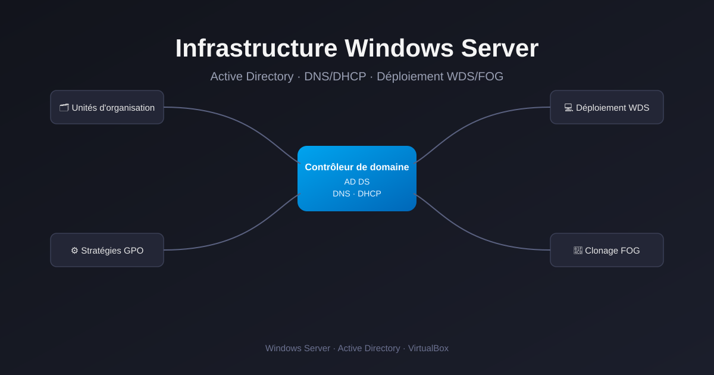

Réalisations
Détail technique des projets réalisés en stage et en cours de BTS SIO SISR.

Infrastructure Windows Server
Active Directory, DNS/DHCP, déploiement de postes via WDS/FOG.
Windows Server
Active Directory
WDS / FOG

Serveur de test pour applications internes
Serveur Ubuntu, Node.js et Nginx en reverse proxy.
Ubuntu
Nginx
Node.js

Script de monitoring automatisé (Python)
Surveillance de sites, serveurs et API avec alerte email, via crontab.
Python
Monitoring
Crontab

Audit de sécurité d'applications internes
Scan de ports Nmap et tests de brute force, encadrés par le tuteur.
Nmap
Sécurité
Pentest

Architecture conteneurisée & Lab Sécu
Mise en place d'un Reverse Proxy (Nginx) et d'une application vulnérable (DVWA) sous Docker.
Docker
Nginx Proxy Manager
Cybersécurité